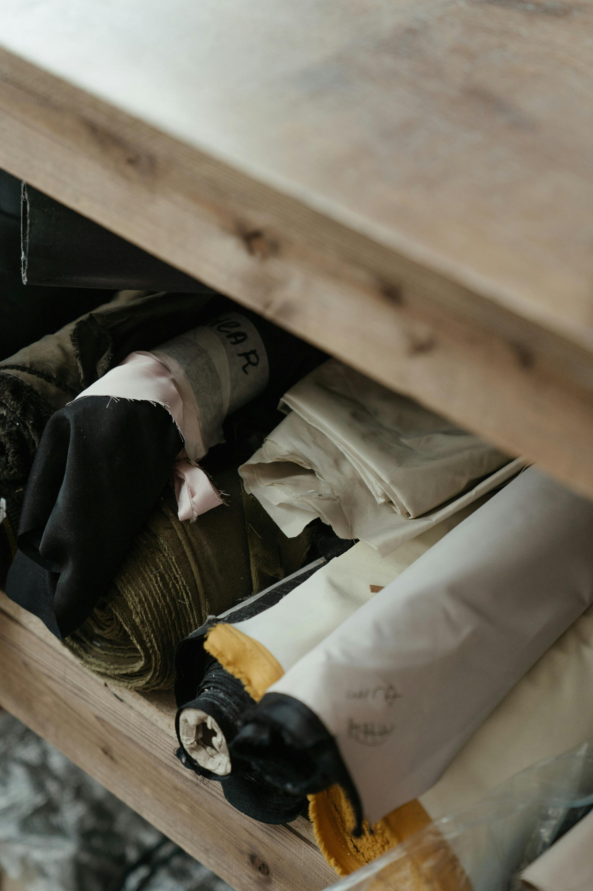
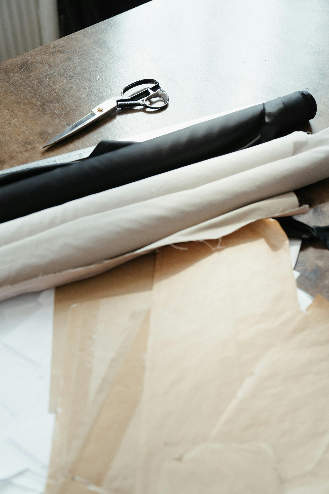

Now comes the fun part! This is always one of my favorite parts, but it's also nervewracking. You've done all this work and spent a lot of time and money on your fabric choice, so how do you ensure you don't mess it up? My advice is to always cut a little larger than you think you need. You can always cut extra fabric away, but it is difficult to add fabric back to it.
When preparing to cut into your fabric, it is best to know a little bit about thread direction. If you look at a piece of fabric up close, you will notice that there are threads going up and down, and threads that run left and right. The vertical threads are called the "warp" and the horizontal are called "weft". When you lay down your pattern pieces, you want to make sure to cut at a right angle from either. If you don't, you will run into a problem with the thread-line called the bias. The bias is a forty-five degree angle from the warp and weft, and allows for stretching of the fabric. This can be helpful in some instances, but when cut unintentionally, causes weird stretching and bubbling in the garment.
After identifying the orientation of your fabric, determine how many of each pattern piece you will need. If you need two, or four, or eight of each piece, feel free to fold the fabric in half, quarters, or eighths. Then arrange the pieces so you have a little extra space around all of them. Sometimes this can be difficult, but don't give up! Once you have it in a way you are satisfied with, pin the pattern to the fabric, making sure there are no wrinkles. Now you're ready for the big moment.
A Beginner's Guide to Cutting is a good resource if you want to deep dive into this subject.
When cutting fabric, you have a few options of cutting tools that would be easiest. The one most often thought of is scissors, and this is a good option, but may struggle with thicker fabrics. Another choice very similar to but stronger than scissors is shears. They sound intimidating, but they are just better able to cut through more layers, due to the rounded edge of the bottom blade. The next choice is one that people either love, or despise. A rotary cutter is super sharp, does really well on curves and looks like a pizza cutter for fabric. It is preferred for quilting, but is difficult to use on multiple layers of fabric or on thick fabrics. One accessory cutting tool is called pinking shears. These cut the edge of a piece of fabric in a zig-zag, thus keeping it from fraying as easily.
Textile is just a fancy word for fabric. So, when talking about textiles, you should know that there are many families, cateories, and sub-categories. The two biggest groups are natural and synthetic. These are almost always used in tandem, in percentage mixes. For example, most of the shirt fabrics nowadays are cotton rayon. Cotton is a natural fiber, but rayon is a type of polyester, which is a synthetic fiber. You can easily find what fabric a garment is made of by looking at the tag, normally found in the left side seam or back of neck. Linen, wool, and silk are natural fibers which are breathable and absorbant. These are now considered, in their pure form, to be expensive and difficlt to attain. Spandex, nylon, and acrylic are synthetic fibers which are more durable, but are not very breathable.